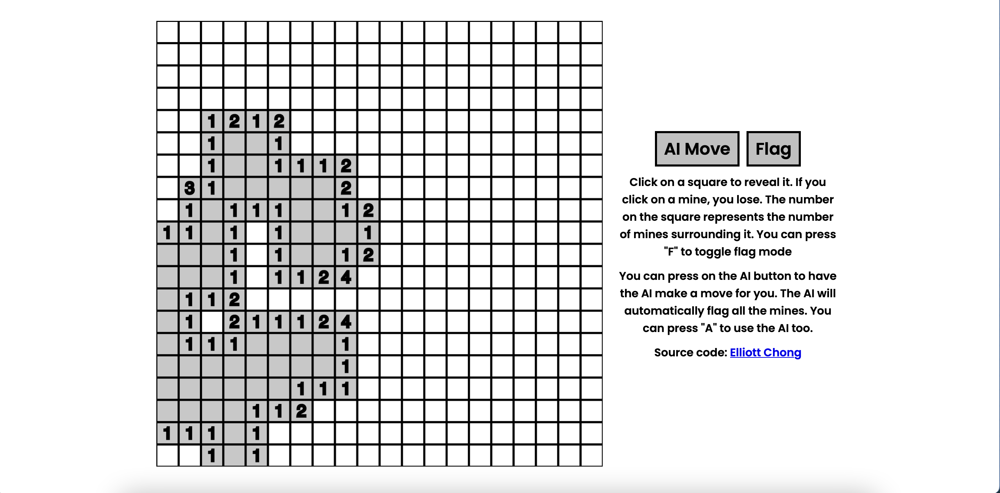
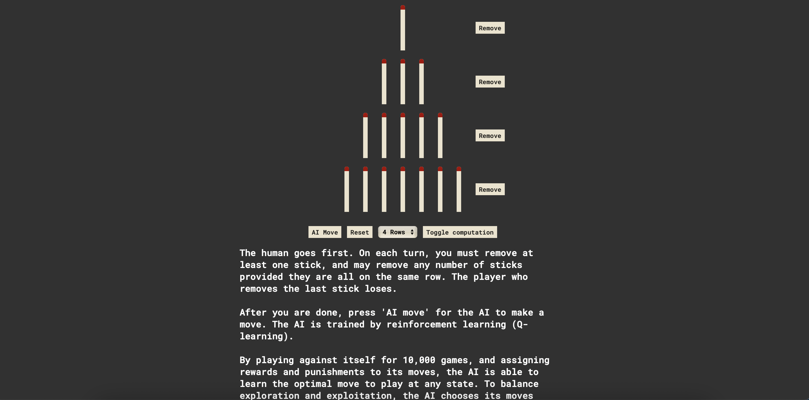
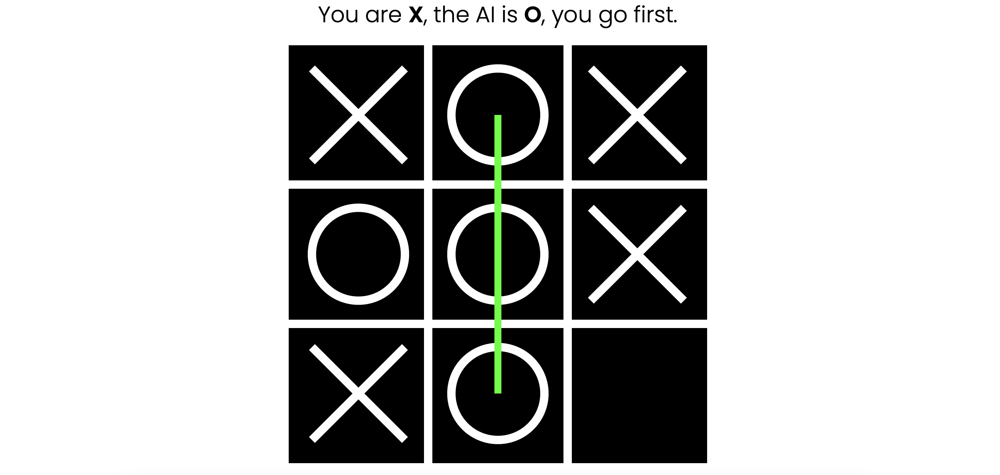
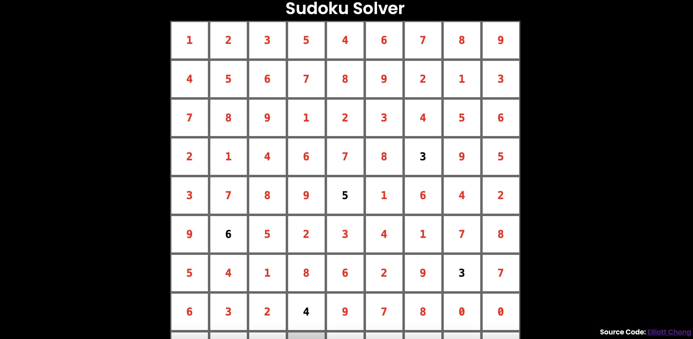

Implemented with p5.js, this project is a showcase of some of the
more famous search algorithms.
Minesweeper AI:
Implemented with p5.js, this project is a showcase of some of the
more famous search algorithms.

Nim AI:

This is my first machine learning related project. The AI is
trained through Q-Learning, playing against itself many times and
learning the optimal move to play at any state.
Both the AI and the gameplay was coded out with vanilla JS.
Minimax Tic-Tac-Toe AI
This is a demostration of the minimax algorithm, an adversarial
search algorithm. The AI is optimised with alpha beta pruning.
Made with p5js

Sudoku solver:

A sudoku solver that utilises backtracking to enumerate and
exhausts all possible board states.